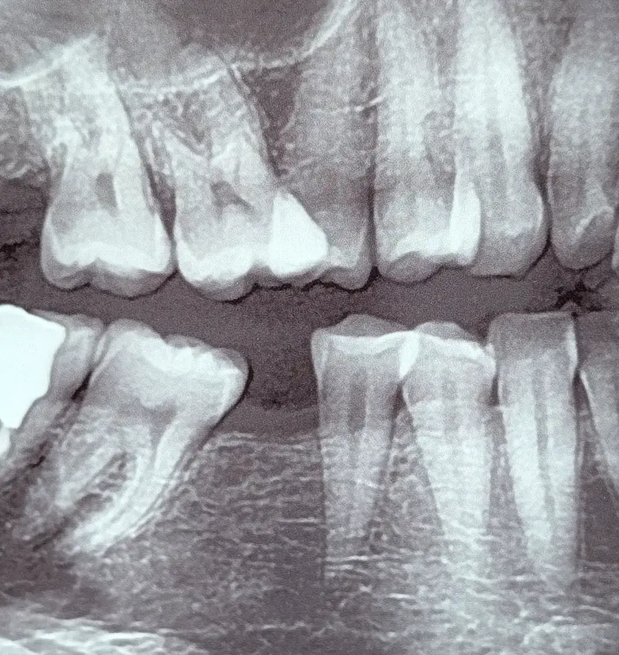

نسخه استخراجشده؛ ترجمه یا تأیید علمی انجام نشده است. وضعیت: captured
بیمار برای جایگزینی دندان ازدسترفته آمده است. میگوید این دندان را در کودکی از دست داده و حالا به فکر جایگزینی آن افتاده.
پرسشهای اولیه سادهاند: مشکل زیبایی داری؟ نه. در جویدن غذا مشکلی داری؟ نه.

این کیس بیشتر از آنکه «مشکل» باشد، یک وضعیت قدیمی و تثبیتشده است؛ چیزی که اگر قرار بود از کنترل خارج شود، معمولاً سالها قبل خودش را نشان میداد. زمانی که گذشته، اینجا خودش یک دادهی تشخیصی است.
آنچه روی OPG فقط یک «جای خالی» است، در طرح درمان یک پروژهی چندتخصصی است. در شرایطی که بیمار نه مشکل عملکردی دارد و نه شکایت زیبایی، ورود به این مسیر لزوماً به معنای بهبود کیفیت زندگی نیست.
به بیمار توضیح داده شد که طی این سالها تغییرات بسیار محدود بوده و این فقدان دندان اثر قابل توجهی بر سیستم جوندهی او نگذاشته است؛ پس در حال حاضر، دست نزدن میتواند منطقیترین انتخاب باشد.
کنار یونیت، گاهی درمان در «اضافه کردن» خلاصه نمیشود؛ بلکه در حفظ ثباتی است که هنوز مختل نشده. نگهداشتن ثبات مختلنشده خودش یک انتخاب درمانی مشروع است.